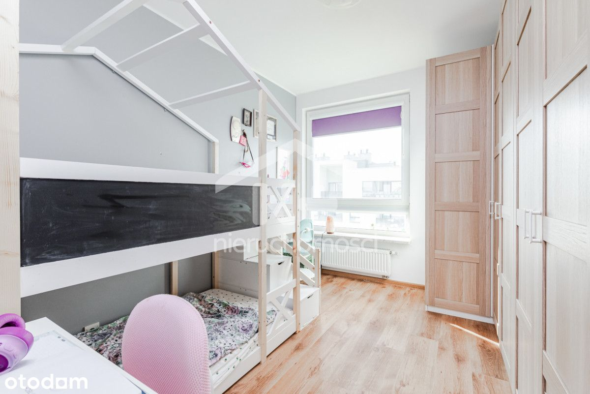
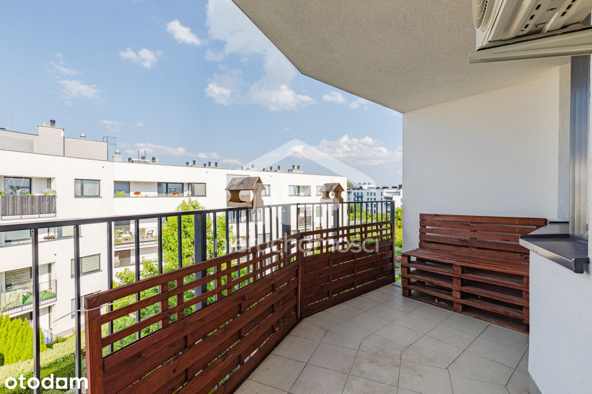
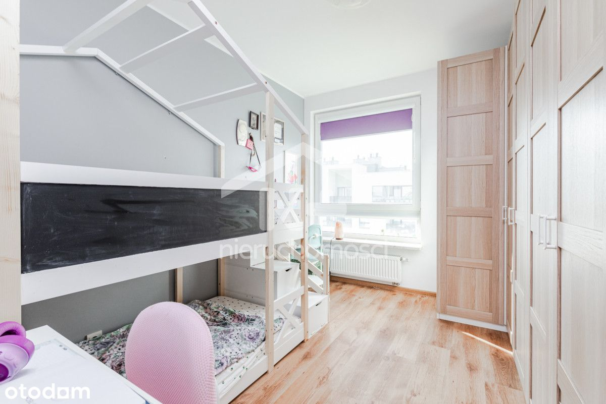
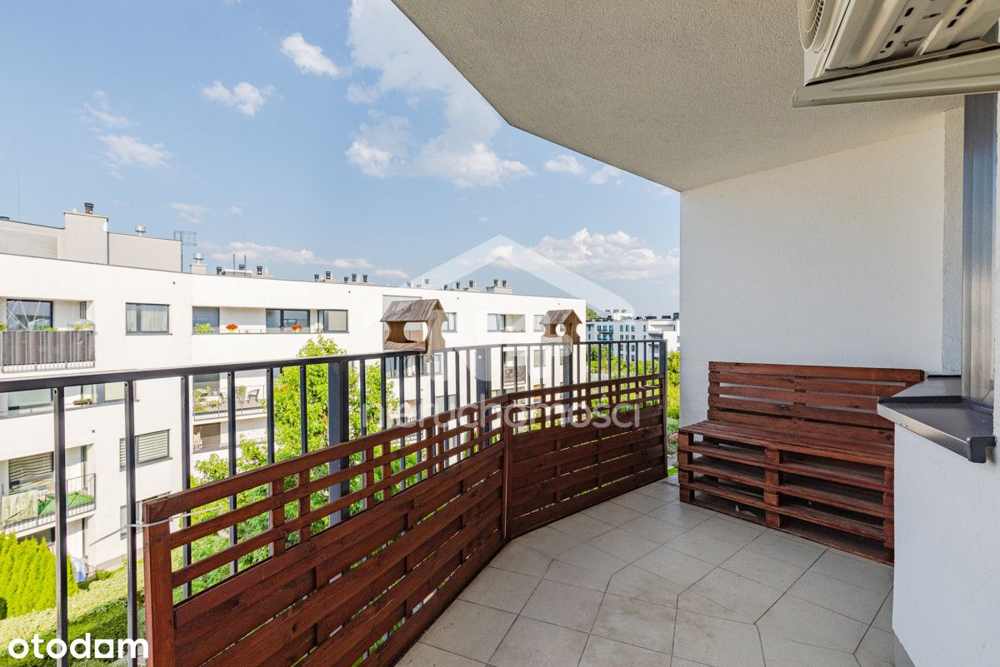

Prezentuję Państwu piękne mieszkanie na Osiedlu Wilno (Targówek, Elsnerów), będące idealnym miejscem do zamieszkania wraz ze swoją rodziną! Jest ono wybudowane przez Dom Development, co jest gwarancją najwyższej jakości oraz wygody!
Mieszkanie te składa się z:
- salonu z aneksem,
- dwóch sypialni,
- holu,
- schowka/garderoby,
- łazienki,
- loggi.
Mieszkanie jest w standardzie do wejścia. Na podłodze w salonie mamy deskę barlinecką (wybarwiany dąb). W pokojach natomiast są panele. W lokalu są również nowe szafy.
Jest ono wyposażone w działającą klimatyzację i moskitiery. Mieszkanie jest dobrze izolowane, co wiąże się z niskimi kosztami ogrzewania.
Pierwotnie w miejscu schowka/garderoby znajdowało się WC. W razie chęci powrotu do takiego układu wciąż są tam odpływy. Ściany zostały odmalowane na początku września 2024.
W budynku jest winda od góry aż do poziomu garażów. Całe osiedle posiada kontrolę dostępu oraz jest monitorowane, dlatego jest to idealna lokalizacja do wychowywania swoich dzieci. Na patio mamy zarówno ogromną ilość zieleni, jak i place zabaw. W bloku są również wózkownie i stojaki na rowery.
W promieniu kilkuset metrów znajdziemy wszystkie potrzebne lokale oraz sklepy do życia codziennego tj.: salony kosmetyczne, przychodnia NFZ, klinika weterynaryjna, Żabki, Rossman, Pepco, sushi bary, pizzerie i wiele innych! W zasięgu kilkuminutowego dojazdu autem dojedziemy m.in.: do Lidla, Kauflanda, Ikei M1.
Komunikacja miejska jest również w zasięgu ręki. W odległości 5 minutowego spaceru dojdziemy do deweloperskiej stacji kolejowej, którą w 4 minuty dostaniemy się do najbliższego metra na Dworcu Wileńskim. W pobliżu bloku mamy również liczne przystanki, z których odjeżdżają takie linie autobusowe, jak m.in. 156, 170, 262 i inne.
Do mieszkania są do dokupienia 2 miejsca w garażu podziemnym. Jest również opcja zakupu samych miejsc osobno (oddzielne KW).
Zdjęcia przedstawiają realny układ mieszkania, jednak niektóre z nich mogą przedstawiać przykładowe możliwości urządzenia (kolor i układ ścian).
 
